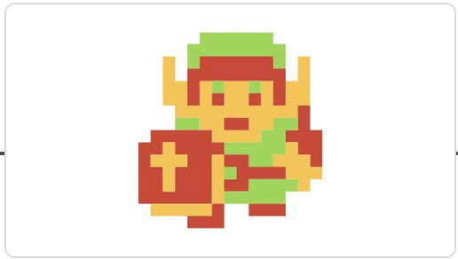

Our History
We’ve been dedicated to our mission for a long time—since 1889, in fact.
- 1889

- Fusajiro Yamauchi began a small business manufacturing “Hanafuda” playing cards in Kyoto, Japan.
- 1980

- Announced a wholly owned subsidiary, Nintendo of America Inc. (NOA). Started selling the Game & Watch™ product line.
- 1981

- Developed and began distribution of the coin-operated video game Donkey Kong™. This video game quickly became the hottest selling individual coin-operated machine in the business.
- 1985

- The Nintendo Entertainment System™ (NES™) launched in America and became a smash hit.
- 1985

- Mario™ was first introduced in the Super Mario Bros.™ game.
- 1986 
- The character Link™ made his first appearance in the Legend of Zelda™ game for NES.
- 1989
- Introduced Game Boy™, the first portable handheld game system. Originally bundled with the Tetris™ game, it was an instant phenomenon.
- 1991

- The 16-bit Super Nintendo Entertainment System™ (Super NES™) was released in the U.S.
- 1996

- The Nintendo 64™ system launched in the U.S. on Sept. 29, along with the critically acclaimed Super Mario 64™ game.
- 1998

- Nintendo introduced Game Boy Color™. Pokémon™, a breakthrough game concept for Game Boy, was introduced to the world and generated a nationwide craze to “Catch ‘em All!”
- 2001

- Launched the Game Boy™ Advance and the Nintendo GameCube™ systems. The Nintendo GameCube was the first Nintendo system to use optical discs instead of cartridges for its games.
- 2004

- Launched the Nintendo DS™, an innovative, dual-screen handheld gaming system.
- 2006
- Nintendo introduced the Wii™ system and with it several advanced features. Wireless motion-sensitive controllers, built-in Wi-Fi capability, and a host of other features made Wii the best-selling later-generation console system in the world.
- 2008
- Wii became the first system purchased by more than 10 million Americans in a single year.
- 2011

- The Nintendo 3DS™ system launched, letting users view and play 3D content without special 3D glasses.
- 2012

- The Wii U™ system launched with the innovative Wii U GamePad controller that offered users new ways to play together, including off-TV. This system also introduced support for amiibo™ accessories.
- 2015
- The Splatoon™ game launched, introducing the squid-kids known as Inklings.
- 2017

- The Nintendo Switch™ system launched, along with hits including Super Mario Odyssey™ and The Legend of Zelda™: Breath of the Wild.
- 2019

- The Nintendo Switch Lite system launched. Designed specifically for portable play, the compact system plays the library of Nintendo Switch games that work in handheld mode.